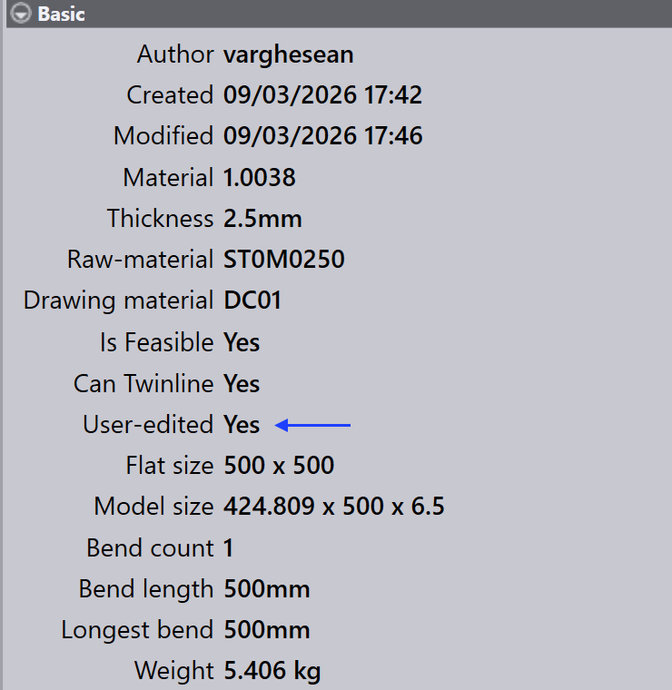

Validazione attrezzaggio
Questa sezione descrive come accedere e modificare le informazioni di attrezzaggio per i componenti in TruSmartCAM.
-
Fare clic con il pulsante destro del mouse su un riquadro di componente qualsiasi per aprire il pannello componente e accedere alle opzioni di attrezzaggio.

-
Fare clic su Toolings per passare alla prima istanza attrezzata disponibile.
-
In alternativa, fare clic direttamente su un’istanza attrezzata per visualizzare i dettagli della macchina e le opzioni di attrezzaggio.
-
Utilizzare
 per
Open in read-only mode for viewing.
per
Open in read-only mode for viewing. -
Utilizzare
 per
Check-out the document for editing.
per
Check-out the document for editing. -
L’istanza attrezzata selezionata si apre in TecZone o MetaCAM.
-
Eseguire controlli di attrezzaggio manuali e apportare le modifiche necessarie.
-
Quando si tenta di salvare, una finestra di dialogo Unsaved Changes richiede di confermare le modifiche.
-
Fare clic su Yes per procedere con il salvataggio.
-
Il sistema esegue nuovamente la Validazione attrezzaggio dopo il salvataggio.
-
Se non sono presenti errori, appare l’opzione per salvare le modifiche in TruSmartCAM.
-
Se vengono rilevati errori di attrezzaggio, viene mostrato un messaggio di errore:

-
Dopo il salvataggio, lo stato di attrezzaggio del componente viene aggiornato nella libreria componenti.
-
Un colore verde sull’istanza attrezzata indica che è stato effettuato il check-in.

-
L’autore dell’istanza attrezzata viene aggiornato all’ultima persona che l’ha modificata.
-
Il campo User-edited indica se l’istanza attrezzata è stata modificata manualmente. Quando un utente effettua il check-out dell’istanza e apporta modifiche, questo campo viene automaticamente impostato su Yes al salvataggio.

-
Se un componente è attualmente in fase di modifica, sul suo riquadro appare un’icona utente.
-
Passando il mouse sul riquadro viene mostrato chi ne ha effettuato il check-out e l’ora del check-out.
-
Mentre il componente è sottoposto a check-out, l’opzione
Check-out the document for editing è disabilitata
per la stessa istanza attrezzata, e l’opzione  Cancel Check-out viene abilitata.
Cancel Check-out viene abilitata.